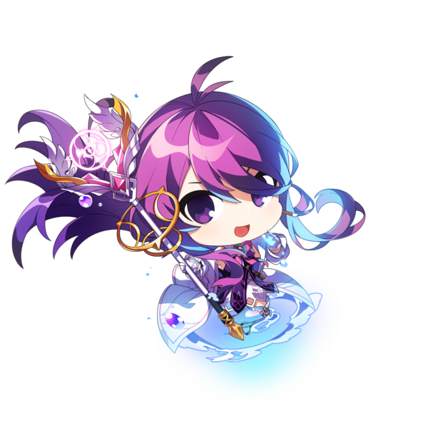
Aether Sage Revision Patch Guide
By Lucille
I. Overview
This guide will cover all about Aether Sage's new changes in the revision patch, and will go in-depth in the changes regarding her playstyle.
Type: Magical DPS
Collection bonus: Additional Flat Magical Attack Power
II. Pros / Cons
Pros
-
Good Damage
Damage wise you are fit to carry most of raids / PvE Content. Your damage is consistent across the board; Bigger bosses are preferred,
but AeS can manage just fine on all boss sizes.
Numbers wise it’s not in the peak levels of or , but it's still good regardless.
-
Clearing / Range
Majority of your main skills
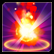
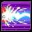
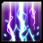
Can cover up most of the screen with their big ranges / hitbox. Your solo clearing is very good because of this.
-
Easier Mechanics
Having and 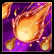,
we can have an easier time in some mechanics: Using 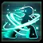 then teleporting to the top,
then using to suspend ourselves in the air. (Rosso CM, 16-3, 18-4-2 mark).
Rosso pinwheel mechanic can also be breezed through by timing properly.
Cons
-
Slow
Arguably her biggest weakness, the pros above regarding damage and clearing are offset by almost all of our skill taking 50 years to cast. This makes you very slow in terms of speedrunning / fast clearing
dungeons.
This extends to you needing skill hits to build up stacks to access our powerful skills. Chances are in speed parties by the time you have collected enough stacks, the room has been cleared / boss has
been killed. Classes with faster clearing than you can also deny you the opportunity to get stacks for yourself in the first place.
-
Positioning
Taking advantage of our damage in small / medium bosses will require a bit of positioning to maximize damage, so we don't have the luxury of just hugging the boss and doing damage from there.
-
No Inherent Ignore Defense
None of our skills offer any degree of Ignoring Defense unlike other members of the cast. This makes our damage output a bit less in high defense dungeons.
-
Cooldowns
The class literally needs / / to function properly.
is not enough for AeS, she needs dedicated CDR buffers to enable to bring out her full damage potential.
An AeS with at least one of the aformentioned classes will feel completely different compared to one without; Otherwise majority of the time you will be staring at your cooldowns.
-
Alcoholic
Double Casting 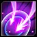 passive causes our main Bravery skills to reach 400 mp per cast, and our Strength skills to be 270+ mp per cast. Stack up on plenty of pots, and ensure you have Ice Burner buff cause you will be burning
through them a lot. Kusharta's Mask becomes somewhat of a viable option for us because of this.
-
High ERP investment
As a result of the 2 cons mentioned above, AeS needs that 550 ERP level to invest into MP cost reduction and Additional Max MP.
III. Double Casting
4 of your skills have a passive that upon pressing the skill key twice, you automatically cast a second skill, free of cooldown (but still with mp cost). The skills are:
| First Skill |
Second Skill |
Total MP cost |
|
Meteor Call
|
 Frost Barrage
Frost Barrage
|
400 MP |
|
Icicle Spear
|
Circle Flame
|
400 MP |
|
Gust Storm
|
Lightning Shower
|
370 MP |
|
Lightning Bolt
|
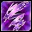
Cyclone |
275 / 300 MP |
Notable changes here are that:
-
now chains to instead of 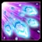: this means we can freely use this skill without worrying about the freeze count.
-
Second is the addition of to , which is very welcome and is very important to our next passive.
-
The first skill cooldown is now also increased to 30% for 10%.
IV. Sage's Wisdom
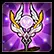
Aether Sage's new reworked passive, and the thing largely responsible for why she is as strong as is right now. The passive itself is a lot of text, but we can break it down into parts:
1. Whenever you hit an enemy with certain skills, there will be certain "elements" spawning out. These behave similar to Celestia's Aquarius, but can only be picked up by yourself.
There are 3 kinds of elements here:
Fire,
Ice and
Lightning.
The number of elements spawned is determined from the number of hits the skill does.
The number of elements collected can be tracked in your buff list like this: 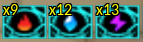
Here is a chart denoting each skill, and the number of elements they spawn:
| Element |
Skill |
# of Element generated |
Image |
|
Fire
|
Meteor Call
|
9-10 |
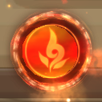
|
|
Gust Storm
|
11 |
|
Meteor Shower
|
8-50 |
|
Circle Flame
|
1 |
|
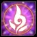
Blaze Step
|
33 |
|
[Mod] Blaze Step
|
50 |
|
Ice
|
Blizzard Shower
|
1 |
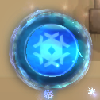
|
|
Frost Barrage
|
8 |
|
[Mod] Frost Barrage
|
12-14 |
|
Icicle Spear
|
2 |
 Lightning
Lightning
|
Lightning Bolt
|
1 |
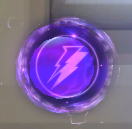
|
|
Cyclone
|
5-11 |
|
[Mod] Cyclone
|
18 |
|
Lightning Shower
|
13 |
|
[Mod] Lightning Shower
|
5-16 (against wall) |
Aether Immersion 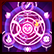 (2nd Hyperactive) gives you 20 of each
2. 5 of the
Fire,
Ice and
Lightning
element stacks are used whenever you use
We'll call these skills "Empowered". These skills are completely new, and deal more damage than the regular versions, and also generate their own number of elements on hit:
| Skill |
Element stack being used |
# of Element Generated |
Skill Demo |
|
Meteor Call
|
Fire
|
9
|

|
|
Lightning Bolt
|
Lightning
|
6
|

|
|
Icicle Spear
|
Ice
|
2
|

|
3. Whenever you reach 30 stacks on all 3 elements, Aether Sage will consume all those elements and will give you a buff called "Aether" for 30 seconds.
The duration of this buff will do refresh once you collect another 30 stacks on all 3 elements.
This buff changes a few mechanics on this passive:
- Your Empowered Skils transform into Aether Applied skills.
- Visually they are just the same as Empowered, albeit recolored to pink.
- These skills no longer consume element stacks per cast, but will still spawn you elements to collect.
- Behavior wise moves much slower on hit.
Most importantly, they practically do double the damage compared to Empowered Skills.
| Skill |
# of Element Generated |
Skill Demo |
|
Meteor Call
|
9
|

|
|
Lightning Bolt
|
6
|

|
|
Icicle Spear
|
2
|

|
At this point, her playstyle is pretty much clear cut:
-
Keep up durations of
and
-
If not yet in
spam skills to generate elemental stacks; preferrably the ones that give plenty of hits per cast (, , , etc.)
-
If is active
Spam Aether Applied
In places where there is significant downtime (1-1 CM Rosso / Berthe) You can sneak in a for instant 20 stacks.
V. Setups
Skill Build
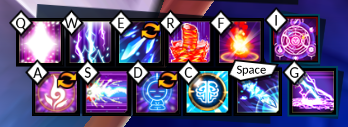
Armors
Obviously stack Icicle Spear
Aether Sage prefers reset lines for spamming skills and helps alleviate the cooldown issues.
Thus, we take Cerulean / Reset lines for Tenebrous.
The rest of the armors are the usual standard builds for DPS.
ERP
ASD > Polarize > Adapt > Boss Damage > Cooldown Reduction > Max MP increase > MP Cost Reduction
Skill traits
I wont list all of her skills here; just the ones that we use.
- Killing Blow
-
Heavy
-
Empowered
-
Useful
Collection Synergy
It would be better to refer to some known guides. Just follow First Path synergies, However you should stick to Adapt Synergy if you cannot reach adaptation cap yet.
VI. Party Setups
Aether Sage is highly party dependent; If she does not have her cdr buffers her damage will suffer a lot, so great importance has to be
made when it comes to creating parties.
Non-Negotiables
They are here for 1 reason alone, these classes give 1.7/1.5/1.5 Cooldown Acceleration. These are some of the highest available
Numbers in terms of CDA; Combine these with their healing both MP / HP to assist you in managing your mana / pots and survive in raids;
They are a need for any AeS to bring out her full power.
Note though that if you already have a in your party, there is no need to get an
; It would be better to get another Magical Buffer instead. The inverse applies as well.
If you do have Then feel free to get one of the two.
Magical Buffers
Good Magical Buffers to bring. All of them have an assortment of Buffs, Debuffs, CDR, Healing And Super Armor for your needs.
There are some classes here that do reduce your cooldowns, notably
I dont have them as higher up since only offers 1.2x CDA, and only resets, which is welcome for us, but CDA is unfortunately our main priority.
Rest of the cast is filler. Feel free to add based on their buffs: Maybe heals / Shred / SA / CDA, etc.